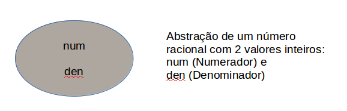
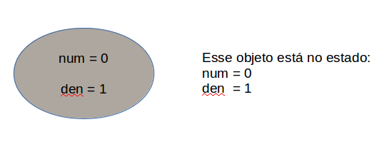
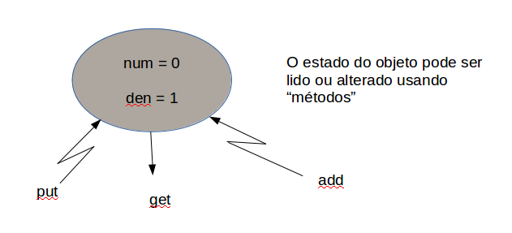

Introduzir conceitos de orientação a objetos, como os conceitos de classes, objetos, atributos e métodos, e como definir classes e utilizar objetos em Python.
- Classes, objetos, atributos e métodos;
- Métodos especiais (= mágicos) do Python: __init__() e __str__();
- Métodos com parâmetros com valores default;
- Métodos especiais para operadores comuns como, por exemplo, +, -, *, e /;
A capacidade de representar e abstrair conceitos é fundamental para o nosso pensamento, tornando possível a generalização de coisas e a construção de conceitos cada vez mais complexos.
Um tipo abstrato de dados (= TAD) é uma descrição de como vemos os dados e as operações permitidas sem nos preocuparmos em como são implementadas. Estamos apenas preocupados no que os dados representam e não em como são construídos. Até o momento usamos apenas tipos nativos do Python como int, float, str, bool e list. Agora iremos definir novos tipos. Tipos definidos pelo programador são chamados de classes.
Na evolução das linguagens de programação, a necessidade de se representar e manipular informações complexas resultou no conceito de classes e objetos. Classes são abstrações e descrevem como os dados serão representados. Já objetos são instâncias de classes que mantém e permitem a manipulação da informação.
Python é uma linguagem de programação orientada a objetos (= POO = object-oriented programming language). Uma das características de linguagens orientadas a objetos é facilitar que programadores criem novas classes para modelar os dados necessários para resolver problemas. Um objeto contém as informações/valores de um tipo/classe definido pelo programador.
Antes de mostrar como isso é feito em Python, vamos fazer um exercício de motivação para ilustrar algumas vantagens de utilizar POO. O uso de abstração de tipos de dados nos permite fazer uma descrição de um objeto (= seu estado) e o que ele pode fazer (= seus métodos).
O número harmônico \(H_n\) de ordem \(n\), \(n > 0\), é definido como a soma:
Vamos escrever duas funções que recebem \(n\) e calculam e retornam o valor de \(H_n\):
- harmonico_DE(): calcula a soma da direita para a esquerda (= adicionando os termos de \(1/1\) a \(1/n\), nessa ordem); e
- harmonico_ED(): calcula a soma da esquerda para a direita (= adicionando os termos de \(1/n\) a \(1/1\), nessa ordem).
Começamos com a função harmonico_ED(), logo a seguir. Execute o trecho de código abaixo e veja o resultado.
(exercicio_numero_harmonico_ED)
Agora edite o trecho de código a seguir, substituindo os trechos com ? por valores adequados, completando a chamada da função range() para calcular a soma da direita para a esquerda. Se necessário, consulte a documentação da função range.
(exercicio_numero_harmonico_DE)
A solução desse exercício se encontra no final desse capítulo.
Observe que para \(n = 10\), os resultados são iguais, mas para \(n = 15 \ldots\)
Aritmética de ponto flutuante (Floating Point Arithmetic: Issues and Limitations)
Em Python um int é um tipo nativo que representa um número inteiro potencialmente ilimitado.
Representação de erros se refere ao fato que algumas (a maioria, na verdade) das frações decimais não podem ser representadas exatamente como números binários (= base 2). Esta é a razão principal para Python, Perl, C, C++, Java, Fortran e muitas outras linguagens não exibirem os números que esperamos.
Um valor como 1/10 = 0.1 é representado aproximadamente no computador (e não exatamente, como inicialmente imaginamos. Em computadores todos os números são representados em binário (os únicos digitos utilizados são 0 e 1).
Ao escrevermos 0.123 na base 10 estamos escrevendo o número \(1 \times 10^{-1} + 2 \times 10^{-2} + 2 \times 10^{-3}\) Um valor como 1/10 = 0.1 é o número \(1 \times 10^{-1}\). Já, na base binária, conseguimos apenas uma representação aproximada de 1/10 pois este valor é uma dízima periódica (da mesma forma que 1/3 é a dízima 0.3333... na base 10). Na base binária 1/10 é
0.0001100110011001100110011001100110011
ou seja, na base binária 1/10 é
Python nos permite mudar a representação de um número de float para a razão de dois números inteiros utilizando o método as_integer_ratio():
Python 3.4.3 (default, Mar 26 2015, 22:03:40)
[GCC 4.9.2] on linux
Type "help", "copyright", "credits" or "license" for more information.
>>> x = 1/10
>>> x.as_integer_ratio()
(3602879701896397, 36028797018963968)
>>> x
0.1
>>> x = 1/10 # internamente, a representação desse valor é aproximada
>>> x.as_integer_ratio() # retorna numerador e denominador
(3602879701896397, 36028797018963968)
>>> 3602879701896397/36028797018963968 # razão
0.1
>>> numerador, denominador = x.as_integer_ratio()
>>> numerador
3602879701896397
>>> denominador
36028797018963968
>>> numerador/denominador
0.1
>>> y = 3.1415
>>> numerador_y, denominador_y = y.as_integer_ratio()
>>> numerador_y
7074029114692207
>>> denominador_y
2251799813685248
>>> numerador_y / denominador_y
3.1415
>>>
Complicado? Bem, esta disciplina não tratará disso. Tópicos como esse são centrais em disciplinas como Análise Numérica e Cáculo Numérico que estudam a instabilidade numérica de algoritmos (= aproximações calculadas por programas) e como trabalhar com os resultados aproximados para que foguetes lançados à Lua não terminem no Sol, ou coisas do gênero.
Qual função é mais precisa, harmonico_ED() ou harmonico_DE()?
Em Cálculo Numérico aprendemos que a razão da diferença é que ambas as somas são aproximadas mas, ao somar os números “grandes” primeiro, a precisão da soma devido a grande quantidade de números “pequenos” é perdida. Portanto o resultado de harmonico_DE() (de 1/n a 1/1) é mais preciso que da soma calculada por harmonico_ED().
Será possível obter um resultado ainda mais preciso para o cálculo de um número harmônico?
Uma forma de eliminar as aproximações é considerar cada elemento da soma como um número racional, de forma que a soma total também será um número racional e, ao final, calcular a divisão entre numerador e denominador da soma total (ou simplesmente mostrar o numerador e denominador).
Antes de partirmos para a definição de classes e criação de objetos, faremos um passo intermediário. No cálculo de números harmônicos utilizaremos a representação racional de números, em vez da representação em número flutuante (= float). Representaremos números racionais como um par de números inteiros. Assim, 1/10 e 3/4 serão representado como (1, 10) e (3,4). O primeiro inteiro do par representa o numerador do número racional e o segundo, o denominador.
Vamos começar pela função harmonico_RacED(), logo abaixo, que calcula a soma de 1/1 a 1/n usando racionais. Execute esse programa para ver o que acontece.
(exercicio_numero_harmonico_racionais)
Agora complete esse programa escrevendo o corpo da função harmonico_RacDE() e os testes para essa função, para ver se há diferença entre as somas da direita para a esquerda e da esquerda para a direita usando racionais.
dica
O Python consegue trabalhar com números inteiros muito grandes, mas é muito difícil de se ver o resultado. Modifique a função soma_racionais para que ela calcule o MDC entre num e den e retorne um racional simplificado (= irredutível).
Em Python, o número 123 é representado por um objeto do tipo int, o número 1.23 é representado por um objeto do tipo float, o texto "como é bom estudar programação!" é representado por um objeto do tipo str (= string), e assim por diante.
Quanto mais coisas conseguimos abstrair na forma de objetos, ou seja, que possamos tratar como uma entidade que possui um valor ou estado e que pode ser manipulado por meio de algumas funções ou operações sobre essas entidades, mais poderosa se torna a nossa linguagem.
Por exemplo, como vimos, um número racional pode ser representado por dois valores inteiros num e den que representam o numerador e denominador, como na figura abaixo. Em orientação a objetos, dizemos que essas informações armazenadas para representar o objeto, no caso um número racional, são seus atributos. Vamos chamar esse objeto como sendo do tipo ou classe Racional, que vai nos permitir trabalhar com números racionais.
Dizemos que o estado do objeto Racional é definido pelos valores de seus atributos, no caso, num e den. A figura abaixo mostra um objeto Racional no estado num=0 e den=1.
Assim como precisamos fazer operações com números inteiros e reais e com strings para modificar o estado desses objetos, é conveniente termos funções que manipulam objetos da classe Racional. Funções associadas a objetos de uma classe são comumente chamadas de métodos. Por exemplo, é frequente termos métodos que nos permitem conhecer o estado do objeto, Esses métodos muitas vezes recebem o nome de get(). Também é comum termos métodos para modificar o estado de algum objeto, que tipicamente recebem o nome de put(). É frequente ainda termos métodos que produzem outro objeto da classe. No caso da nossa classe Racional, será conveniente termos um método add() que recebe dois objetos da classe Racional e retorna um novo objeto da classe Racional que representa a soma dos dois racionais recebidos.
Veremos agora como definir em Python a classe Racional, seus atribuitos, métodos e como manipular objetos dessa classe. Tudo isso será feito utilizando como pano de fundo o problema de calcular números harmônicos exatamente por meio de racionais, em vez de aproximadamente através do float nativo do Python.
Assim como precisamos escrever a função antes de usá-la em um programa, precisamos definir como um objeto será representado e manipulado antes de usá-lo. Ao escrever uma função, estamos definindo como a função se comporta, ou seja, o que ela faz com os parâmetros de entrada, descrevendo através de código como os parâmetros são manipulados a fim de obtermos o resultado gerado pela função.
Ao representar um objeto necessitamos especificar seus atributos e métodos. Para isso descrevemos não apenas um objeto, mas uma classe de objetos que têm os mesmos atributos. Uma classe é um molde para criar objetos, fornecer seus valores iniciais (= estado inicial) e implementar seu comportamento (= métodos). Uma classe é portanto um trecho de código que define os atributos e métodos de uma conjunto de objetos semelhantes.
Usando uma metáfora de construção civil, uma classe seria o equivalente à planta de uma casa. A mesma planta pode ser usada para construir várias casas. Cada casa, depois de construída, seria o objeto, uma instância da classe. Digamos que os atributos de uma casa sejam cor, e proprietário. Dessa forma, casas com a mesma planta podem ter estados diferentes, uma pode ser verde e outra azul, por exemplo. Podem ter inclusive a mesma cor e proprietário, mas são casas diferentes, se uma muda de cor ou de proprietário, a outra pode ficar inalterada. Essa metáfora é interessante pois basta nos lembramos que a classe é um molde para construirmos um objeto e como ele é manipulado. Uma vez construído, um objeto tem todos os seus atributos e utiliza todos os métodos da classe a qual pertence.
Passemos agora a definir a classe Racional em Python, na forma de um exercício.
Em Python, tradicionamente a primeira letra de uma classe é maiúscula e as demais são minúsculas.
Escreva uma classe Racional que representa um número racional através de um par de números inteiros, o seu numerador e o seu denominador. Essa classe deve possuir os seguintes métodos:
- add(): para adição de dois racionais;
- sub(): para subtração de dois racionais;
- mul(): para multiplicação de dois racionais; e
- div(): para divisão entre racionais.
Já vimos que, como um número racional é definido por seu numerador e denominador, precisamos de ao menos dois atributos para representá-los. Esses atributos podem ser carregados com valores adequados quando um objeto Racional é criado.
Além disso, para exibir um número racional, podemos mostrar o seu numerador, seguido pelo denominador, separados pelo símbolo "/". Essa maneira de exibirmos é bastante útil pois ela pode ser utilizada pela função print() do Python.
Uma primeira versão da classe Racional em Python pode ser:
(Racional_v0)
Nesse caso, a palavra reservada class indica a definição de uma classe de nome Racional. Como na definição de funções ou blocos em Python, o nome deve ser seguido por :, e o corpo da classe vem logo a seguir deslocado de, em geral, 4 espaços em branco.
Todos os métodos com nomes entre __ são especiais por serem tratados de forma diferente dos demais métodos. Nesse exemplo, a classe Racional define dois métodos especiais, o __init__(self) e o __str__(self).
O método especial __init__(self) é chamado automaticamente sempre que um objeto da classe correspondente é criado. Tipicamente, esse método é utilizado para criar os atributos com seus valores iniciais, e por isso esse método é conhecido como construtor da classe.
O método especial __str__(self) deve retornar um string com a representação textual do objeto. Essa função é utilizada por outras funções do Python, em particular a função print().
Um dos princípios da linguagem Python é tornar as coisas explícitas. O self é a forma do Python para permitir que objetos possam usufruir de seus próprios (self ~ próprio) métodos e atributos.
Rode passo-a-passo os testes da classe Racional, que cria 2 objetos (2 instâncias distintas dessa classe), o objeto a e o objeto b. Observe que, ao serem criados, a função __init__(self) é chamada automaticamente. Dizemos que self é uma referência ao próprio objeto. Em Python, self é sempre o primeiro parâmetro de todos os métodos.
Nota sobre self
Na verdade, ao escrever as suas classes em Python, você pode utilizar uma outra palavra além de self, como ref, ou prop, ou outra qualquer. O que importa é que esse primeiro parâmetro é sempre uma referência para o próprio objeto.
Note também que, como self (o 1o parâmetro de todos os métodos) é sempre uma referência para o próprio objeto, ele fica “escondido” nas chamadas dos métodos.
Assim, para tornar claro e explícito que num e den são atributos do objeto e não apenas variáveis auxiliares locais ao método, num e den precisam ser associados a self (ou seja, associados ao objeto) utilizando o .. O trecho abaixo ilustra o caso com a variável auxiliar div que é calculada em __init__(self):
(atributos_e_variaveis_locais)
Observe que esse código dá erro no método __str__(self) pois a variável div foi definida em __init__(self), e por não estar associada ao objeto como self.num e self.den, o Python dá erro de variável não definida quando __str__(self) é chamada da função print(). Lembre-se que os valores de self.num e self.den usados no método __str__(self) foram definidos (carregados) em __init__(self).
Em muitos casos, é útil criar um objeto com valores pré-determinados, ou “default”. Por exemplo, podemos definir que o valor default de um Racional seja 0/1 (por que 0/0 seria uma má ideia?). Nesse caso, basta modificar o cabeçalho do método construtor __init__ da seguinte forma:
(Racional_v1)
Observe que agora o valor default de n é 0 (parâmetro correspondente ao numerador) e de d é 1. Devido aos valores default, podemos definir os valores de n e d apenas quando são diferentes de 0 e 1 respectivamente. Nesse caso, observe que o valor do racional r1 é 0/1, o de r2 é 4/1 e o de r3, que recebeu os 2 argumentos, é 3/2. Quando apenas 1 argumento é passado, a ordem dos parâmetros se torna importante. Assim, na criação do racional r2, o segundo parâmetro (correspondente ao denominador) não foi fornecido e assume portanto o seu valor default 1.
Nesse caso, o Python permite que você passe os parâmetros usando os nomes definidos no cabeçalho do método. Assim:
r4 = Racional(d=-1)
e até:
r5 = Racional(d=3, n=2)
são chamadas válidas.
É possível ainda misturar parâmetros com e sem valores default. Se você decidir por misturar, procure agrupar os parâmetros com valores default no final do cabeçalho, para deixar as chamadas mais consistentes, como:
def metodo(self, a, b, c = 0, d = 1):
Experimente colocar outros parâmetros no __init__(), e crie outros métodos, usando o trecho de código abaixo:
(Racional_v2)
Polimorfismo
o uso de valores default é permitido também no cabeçalho de funções comuns, não apenas métodos, do Python.
Esse recurso é conhecido como polimorfismo, visto que permite que uma mesma função seja chamada de formas diferentes (com um número diferente de argumentos).
Nesse caso, poderíamos simplesmente alterar os atributos diretamente
r1 = Racional()
r1.num, r1.den = 2, 3
Obviamente nesse caso seria mais simples escrever r1 = Racional(2,3). Em orientação à objetos também é comum usar um método para ler e escrever os valores de atributos, como os métodos put() e get():
(Racional_v3)
As operações de multiplicação e divisão são relativamente simples. Na multiplicação basta multiplicar os numerodores e os denominadores, e na divisão basta multiplicar o primeiro pelo inverso do segundo racional.
No caso da adição e subtração, é necessário transformar os racionais para um mesmo denominador, antes de somar e subtrair os numeradores.
No exercício abaixo, escreva os métodos div(), add() e sub() (para divisão, adição e subtração), e alguns testes. Antes de escrever os seus métodos, observe o código do método mul() que preserva os estados dos objetos self e other, e retorna um outro (nova instância) racional. Faça o mesmo para div(), add() e sub().
(Racional_v4)
Altere a classe Racional para que, quando o denominador for 1, ele imprima apenas o valor do numerador.
Altere o construtor da classe Racional para que, quando o numerador e o denominador possam ser reduzidos, a fração reduzida seja armazenada.
Exemplo: para a chamada Racional(12, 20) o valor de self.num e self.den devem ser, respectivamente, 3 e 5.
Dica: crie uma função (ou, se preferir, um método) com mdc que recebe 2 números inteiros a e b e retorna o máximo divisor comum entre a e b usando o algoritmo de Euclides.
Para tornar a classe Racional mais interessante, é possível modificar o comportamento dos símbolos comumente utilizados para adição, subtração, divisão e multiplicação (+, -, /, *) para que possamos escrever programas usando expressões como
r1 = Racional(2,3)
r2 = Racional(1,4)
r3 = Racional(3,5)
r4 = r1 + r2 * r3
Para isso, ao invés de escrever os métodos add, sub etc, podemos os seguintes métodos especiais:
- __add__(): para adição (+)
- __sub__(): para subtração (-)
- __mul__(): para multiplicação (*)
- __truediv__(): para divisão (/)
Altere a classe Racional para utilizar esses métodos ao invés de add(), sub(), etc (provavelmente, basta modificar o nome dos métodos apropriados), e mofifique os testes para utilizar esses operadores.
Para saber sobre esses e outros métodos mágicos, acesse esse tutorial.
(Racional_v5)
O programa a seguir calcula o harmônico de um dado número inteiro :math:n utilizando a soma ED (da esquerda para a direita). Rode o programa e verifique se há diferença entre os métodos usando a soma de números reais e a soma de números racionais.
Modifique o programa para incluir o cálculo da direita para a esquerda (DE).
OBSERVAÇÃO: Caso você encontre problemas ao executar esse código no seu navegador, copie o código para um editor como o IDLE3 e execute o programa em seu computador.
(aula18_numero_harmonico_tentativa_com_racional)
Escreva uma classe Ponto3D que representa um ponto no espaço tridimensional, com as seguintes operações:
- distância à origem
- distância entre dois pontos
- ponto médio entre dois pontos
- __str__() que devolve um string
Nesse caso, os atributos podem ser 3 reais representando as coordenadas do ponto.
(exercício_18_5_tentativa)
Use range(n, 0, -1) como solução do activecode 2.
Solução para o activecode 3:
(exercicio_numero_harmonico_racionais_DE)